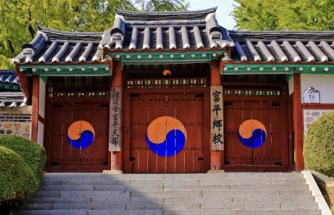
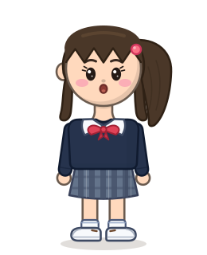
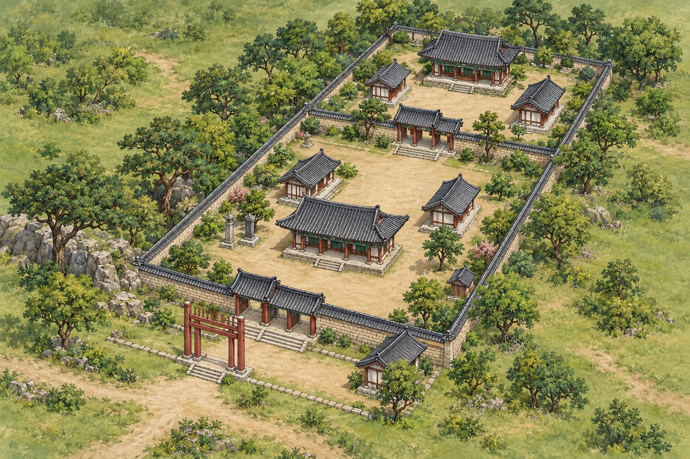
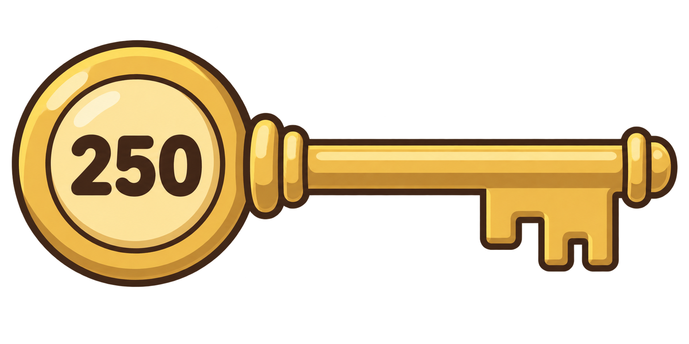
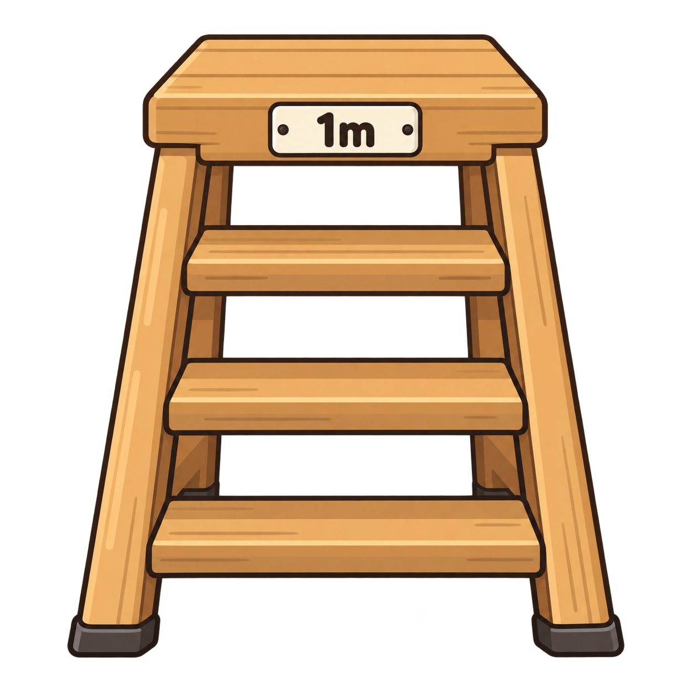
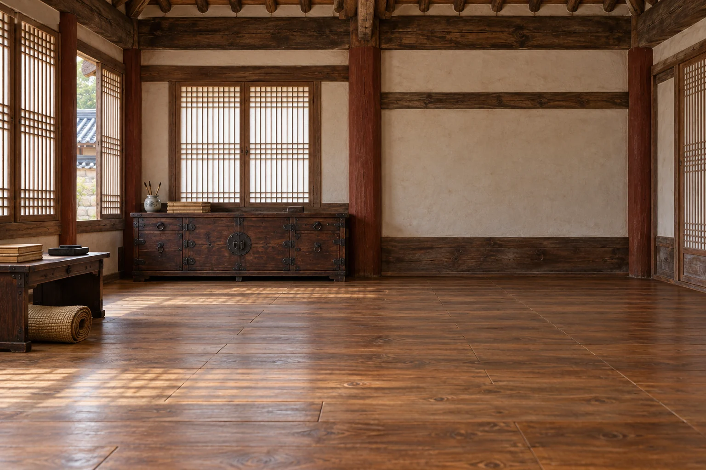
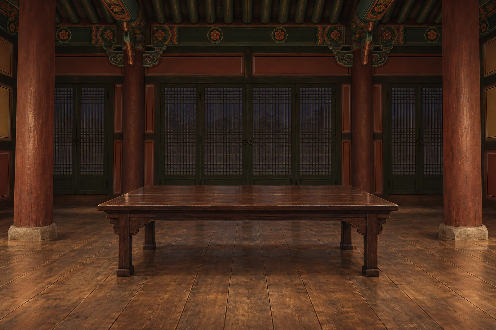

01 · 외삼문에서 발견한 수학
같은 단위로 바꾸어 더하기
민우의 키 150cm에 발판 높이 1m를 더했어요. 먼저 1m를 100cm로 바꾸어야 해요.
150cm + 100cm = 250cm
250cm는 게임 속 문 높이예요.
BUPYEONG HYANGGYO / 걸어서 만나는 수학민우와 함께 걷고, 만지고, 발견하는 향교 여행


조이스틱으로 이동 → 건물 앞에서 탐험

민우외삼문 앞으로 걸어가 보세요.


민우 · 150cm쪽지의 단서 · “열쇠는 명륜당의 창문의 모양과 같다.”
오른쪽 벽의 작은 창문에서 변과 모서리를 살펴보세요.
250 열쇠를 자물쇠에 끼우고, 서랍 손잡이를 아래로 당기세요.

단위를 바꾸어 만든 숫자 열쇠를 자물쇠로 옮겨요.
직사각형 열쇠를 자물쇠에 맞추고, 문 손잡이를 옆으로 당기세요.
네 직각을 가진 도형 열쇠를 자물쇠로 옮겨요.
촛불 옮기기 → 성냥 긋기 → 심지에 불 붙이기

촛불을 잡아 탁자 위 촛대에 직접 놓아 주세요.
게임 속 수학의 빛을 밝히는 상상 체험입니다.
문을 재고, 창문을 살피고, 두 열쇠의 비밀을 풀었어요.
민우의 키 150cm에 발판 높이 1m를 더했어요. 먼저 1m를 100cm로 바꾸어야 해요.
150cm + 100cm = 250cm
250cm는 게임 속 문 높이예요.네 모서리를 움직여 창문과 같은 모양의 열쇠를 만들었어요.
네 각은 직각
마주 보는 두 변의 길이는 같아요.
직사각형 열쇠로 서재의 성냥을, 250 열쇠로 동재의 양초를 찾았어요.
양초에 적힌 ‘대성전’
마지막 장소로 이어진 단서!

부평향교의 수학의 빛을 되찾은 두 친구는
매스투어 버스에 올라 다음 목적지로 떠났어요.
양초에 새겨진 세 글자
대 · 성 · 전다음 목적지를 찾았어요!